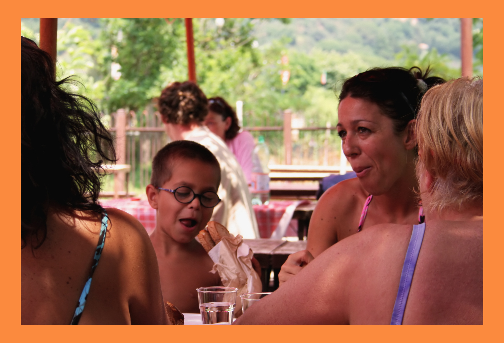

Tasty Treats

Customers enjoy different delicious doughnuts
No matter what the season, fresh baked doughnuts and our aromatic brewed coffee are always welcome treats. Whether you are a local, or are in town for a visit, stop by and sample our selection.
Doughnut Trivia
The largest doughnut ever made was an American-style jelly doughnut which weighed 1.7 tons. The doughnut measured 4.9m in diameter and 40.6m in height. It was made in Utica, New York on January 21, 1993.